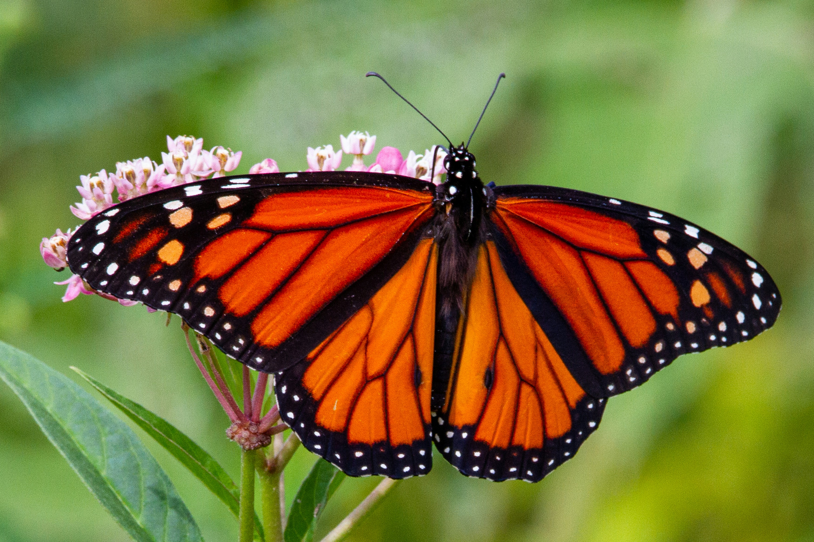

Introduction
Here you will learn about the Monarch butterfly life cycle. They can be distinguished by thier unique markings and orange and black coloring. They are an endangered species of butterfly due to various factors such as climate change and habitat destruction. Click through the buttons to learn more about thier lifecycle.
